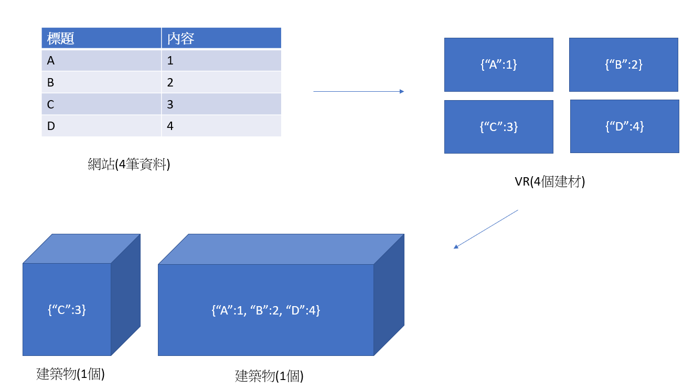

發想理念
記下今天的花費、記下今天看過的書、記下以往的過錯、記下ＣＰ值高的商品、記下上課的內容......『記錄』這個行為在我們生活中，可說是一個滿常見的行為。
這些虛擬的資料透過文字或圖像，轉換成可以方便查看、整理的資訊，來傳達、驗證、改進某些事物，讓我們的生活過得更充實、更美好。
儘管這轉換的過程有些無聊，但看著資料隨著時間一點一滴，透過自己親手累積下來，這份成就感對一些人來說，足以彌補過程的枯燥。話雖如此，但對於沒那麼容易受成就感驅使的人，要鼓勵他們記錄生活，可能還需要多一點誘因。
因此我就在想，如果今天這些資料真的可以蓋出肉眼可見、實體的東西，記錄的過程變得像遊戲一樣充滿操作性與自由度，那是不是就能吸引更多人嘗試『記錄』這個行為了？
三大特色
-
結合VR打造遊戲體驗，讓『記錄』這個行為變得更加有趣。
-
不限定特定項目，只要是數據資料都可以記錄。
-
透過共享資料庫，有助於使用者找到更多元的數據。
目標受眾
-
有記錄習慣的人、或想養成記錄習慣的人
對於有記錄習慣的人，我希望這能成為一個在兼顧記錄時找點樂子的簡易工具。而對於想養成記錄習慣的人，我希望這會是一個能激起動機，協助其養成習慣的工具。
預想功能
分成網頁與VR設備兩部分，目前的構想是：網頁負責蒐集與整理資料，VR負責將資料轉換成遊戲物件讓使用者遊玩。
-
個人帳戶
用來記錄自己的表格與圖表。
-
輸入資料
將想記錄的資料建立成表格，也可以直接將JSON/XML等文件直接轉換。
-
編輯資料
輸入資料後可在頁面上生成一個表格的介面，方便讓使用者隨時新增、刪除多筆資料、篩選特定資料。
-
下載資料
可以轉換成JSON/XML/PDF等文件下載或列印，
也可以下載到VR裝置，以遊戲的方式呈現。 -
圖表整理
將資料依表格標題和內容轉換成圓餅圖、長條圖、折線圖等。
-
定時提醒
設定一個時間，每天的這個時間會發送通知給你的手機，適用於需要每天記錄的資訊(記帳、實驗報告、日記......)
-
建立捷徑
在網頁上選取此功能後，可以在電腦桌面或手機建立捷徑。
-
共享資料庫
使用者可以將自己整理的表格或圖表作為開放資料上傳到網站，讓其他人參考與載入VR。
-
建立地圖
預設會根據載入表格的標題名稱設定地圖名稱，也可以自己重新命名。可以建立多張地圖並隨時切換。
-
建材與建築物件
根據記錄的資料數目，使用者可以得到等量的建材，每個建材會記錄資料的標題與內容，可以使用他們去兌換建築物、自然造景等物件打造城鎮，並且物件會記錄建材的內容，也可以自己在物件上新增一些說明或註解。
-
搬運建築物
移動用建材兌換來的物件，也可以透過平面圖設定物件位置。
-
調整建築物大小
可以根據資料中具有關聯性的數值資料，調整包含此數值資料的建築物比例。
-
任務系統
這部分我還沒想得很清楚，不過或許可以依據整理特定資料或單日整理數目之類的條件，給予建材或新物件的獎勵。
網頁：
VR：
相似的產品
以『將特定項目的記錄過程轉換成遊戲，協助使用者養成習慣』這點來說，有4個與VR資料城市功能相似的APP：
-
1.記帳城市APP
透過手機快速記錄每天的每筆帳目，具有圖表分析、任務成就系統、雲端備份等功能，並且每筆帳目可以在APP內建立自己的城市。
-
2.Plant Nanny植物保姆-喝水養成APP
會依據使用者輸入的資料設定每天喝水目標，使用者在記錄每次喝水量的同時，會在APP裡灌溉一株植物，過程中能透過登入次數、植物生長狀況、完成任務等方式得到種子與幸運草兌換道具，種植更多元的植物。
-
3.Walkr-口袋裡的銀河冒險
用太空船探索星球的小遊戲，需要由手機偵測與記錄使用者的走路步數，才可以提供能源給太空船，完成移動、解鎖道具等功能，以此探索更多星球。
-
4.記事探險：待辦事項時間管理工具
與記帳城市同團隊開發的遊戲，將自己要完成的事情記錄下來，事情完成後將該條目往右滑，就可以獲得建造島嶼的板塊。同時也有編排長程計畫、設定計畫天數等功能。
SWOT分析
★S結合VR的遊戲場景。 只要是數據類型的資料都可以使用。 |
★O搭上元宇宙風潮。 有助於推行Open Data. |
★W無法做到太過複雜的數據整理。 VR在硬體設備上的限制(傳輸資料、使用時間...) |
★T資料內容的安全性。 |
補充說明
-
關於『建材』與『建築物』的關係？
在網頁記錄的資料，下載到VR後會保存成各個『建材』，使用者再使用不同數量的『建材』，去交換不同的『建築物』，其中『建築物』會包含所有『建材』擁有的資訊。
建築物與自然造景的部分，目前是打算預設幾種造型讓使用者自由選擇就好，不打算配合資料內容改變外型，不過可能可以依照建材(數據)的數量或變化幅度去改變外觀或比例。
 -
都能記錄，具體是能記錄哪些數據？
1.數量繁多需要重複查詢
=>(英文單字、法條、HTML標籤......)2.有系統性與起承轉合的文章
=>(教學課程、部落格文章、日記.......)3.口袋名單
=>(推薦書單、常去的餐廳、歌單、排行榜......)4.浮動數值資料
=>(店家營收、帳目、實驗記錄、菜價......) -
VR與網站的資料有沒有辦法同步？
我感覺這個問題還好，VR裝置在整個流程中是扮演一個外接顯示器的角色，並不是隨時都會用到，需要的時候再連接電腦下載地圖(資料)就好，就像隨身碟一樣。
如果一定要同步，目前還沒想到什麼方法。